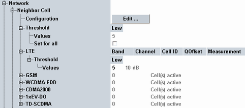
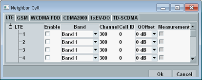

This section defines neighbor cell information to be broadcasted to the UE. For each radio access technology, you can define a reselection threshold and several neighbor cell entries. The signaling messages for broadcast of neighbor cell information are defined in 3GPP TS 36.331.

To configure the neighbor cell entries, press the "Edit" button. The configuration dialog contains one tab per technology.

Only the enabled entries are broadcasted.
The column "Measurement" is only configurable for enabled entries. It specifies whether measurement reports for the neighbor cell are requested from the UE. Received reports are displayed in the main view, see "UE Measurement Report". Option R&S CMW-KS510 is required for neighbor cell measurements.
The individual neighbor cell settings are described in the following.
The configured "Low" reselection threshold value is written into the system information block element "threshX-Low" defined in 3GPP TS 36.331. It corresponds to the parameter "ThreshX, LowP" in 3GPP TS 36.304. The resulting threshold value in dB is displayed for information.
You can define an individual threshold per technology or a common threshold applicable to all technologies. To apply common thresholds, enable "Threshold > Set for all". To apply the individual thresholds, disable the parameter.
Remote command:For an LTE (E-UTRA) neighbor cell entry, you can specify the operating band and downlink channel number, the physical layer cell ID and the "QOffset".
Parameter "QOffset" corresponds to the value "q-OffsetCell" in 3GPP TS 36.331, which equals "Qoffsets,n" in 3GPP TS 36.304. It is used by the UE when evaluating candidates for cell reselection or triggering conditions for measurement reporting.
If the channel number of an entry and the currently used channel number are identical, the parameters are written into system information block 4 (intra-frequency cell reselection). Otherwise they are written into system information block 5 (inter-frequency cell reselection).
Reselection thresholds defined for LTE are only relevant for system information block 5.
The list supports up to 16 active neighbor cell entries. The active entries can use up to five different channel numbers. Active entries with the same channel number must have different cell IDs.
Remote command:For a GSM (GERAN) neighbor cell entry, you can specify the operating band and the channel number used for the broadcast control channel (BCCH).
This information and the GSM reselection thresholds are written into system information block 7.
Remote command:For a WCDMA (UTRA FDD) neighbor cell entry, you can specify the operating band, the downlink channel number and the primary scrambling code of the cell.
The channel number and the WCDMA reselection thresholds are written into system information block 6.
Remote command:For a CDMA2000 (1xRTT) or 1xEV-DO (HRPD) neighbor cell entry, you can specify the band class, the channel number and the physical cell ID which identifies the PN offset.
This information and the reselection thresholds, are written into system information block 8 - the CDMA2000 parameters into element "parameters1XRTT", the 1xEV-DO parameters into element "parametersHRPD".
Remote command:For a TD-SCDMA (UTRA TDD) neighbor cell entry, you can specify the operating band, the channel number and the cell parameter ID.
The channel number and the TD-SCDMA reselection thresholds are written into system information block 6.
Remote command: